CYSTS LIST
DUBRIDINIUM/DIPLOPELTA/CASPIDINIUM/BOREADINIUM/DIPLOPSALIS
Surface |
Shape |
Archeopyle |
Species |
Central body (um.) |
Image |
BrownTwo layers, thick microgranular inner layerthin smooth outer layer |
SphericalClosely attached outer layer |
TheropylicFollowing cingulum |
Dubridinium caperatum | 30 to 32.8 (D) |
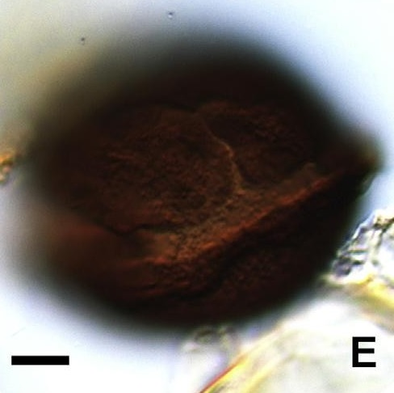 |
BrownSmooth thick wallCovered by a closely attached outer layer folded into a reticulum (fenestrate appearance) |
SphericalClosely attached outer layer |
- |
Dubridinium cassiculum | 24 to 34 (min D)35 to 47 (max D) |
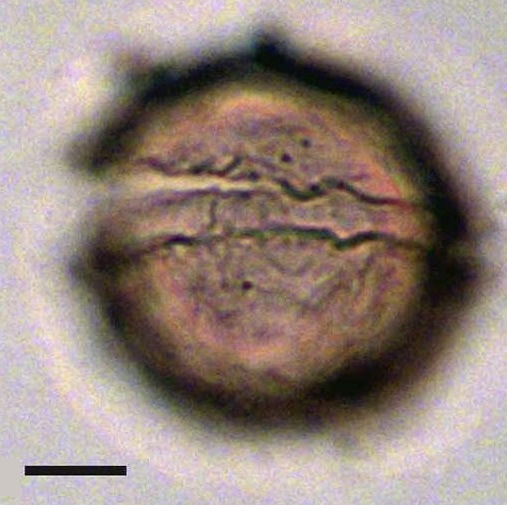 |
BrownScabrate to finely microgranular inner layerOuter layer membranous |
Spherical or ovoidClose or distant from inner layer |
- |
Dubridinium cavatum | 35 to 58 (min D)42 to 58 (max D) |
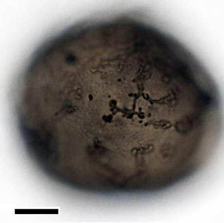 |
BrownString of solid verrucate ornamentationThin wall |
Spherical to subsphericalIrregular ecuatorial shape |
TheropylicFollowing cingulum |
Dubridinium ulsterum | 35 to 44 (min D)37 to 51 (max D) |
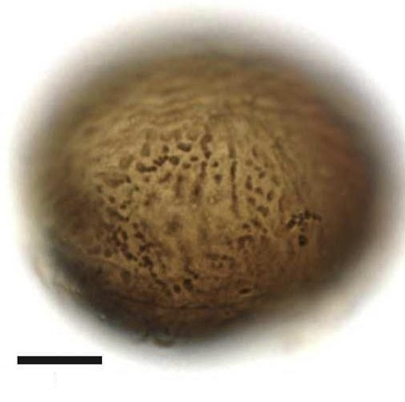 |
Thick wallDark brown w contentsLight brown w empty |
SphericalRounded regions with hairs |
TheropylicHair like processes(1-4 um. L) |
Diplopelta symmetrica | 37 to 50 (D) |
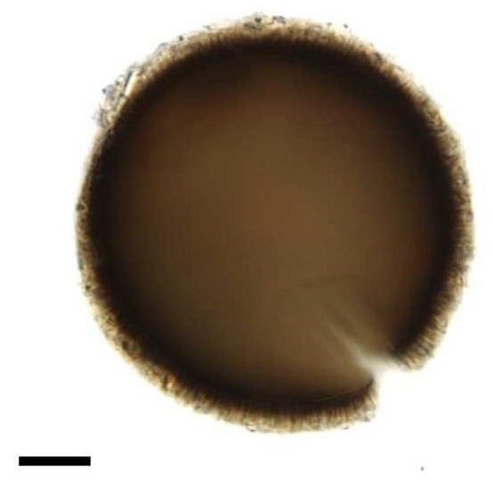 |
Thick wallDark brownSmooth |
Spherical |
TheropylicLarge |
Diplopelta globula | 60 (D) |
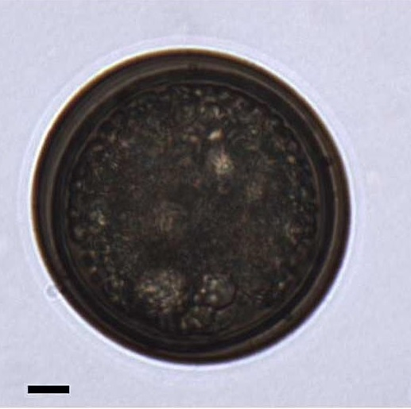 |
TransparentCoarsely granulateThickness wall 1.5 um.Dextral torsion and paratabulation |
SubsphericalSlightly cruciform and reniformEpicyst smaller than hypocyst |
PrecingularVariable ornamentationFrom papillate, verrucate to rugulate |
Caspidinium rugosum | 48 (L)43 (W) |
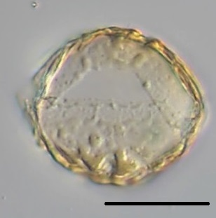 |
Pale brownCoarsely granulate |
Spherical to ovoidal |
Large and theropylic |
Boreadinium breve | 30 to 40 (D) |
|
Dark brownSmmooth |
Spherical |
Theropylic |
Diplopsalis latipeltata | 26 to 46.5 (D) |
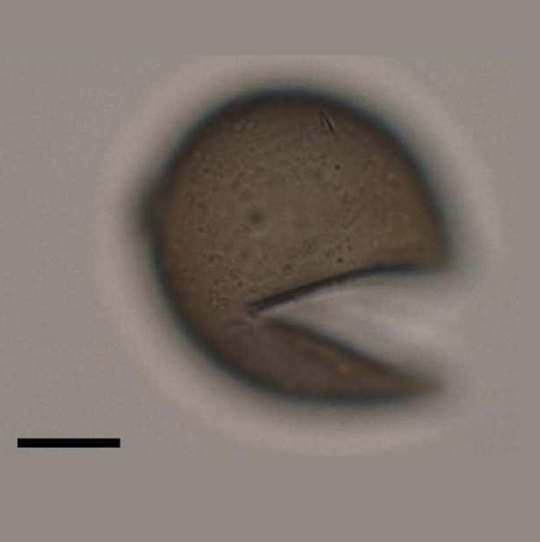 |
Pale brown to graySmmooth |
Spherical |
Theropylic and apicalV-shaped |
Diplopsalis lenticula | 33 to 50 (D) |
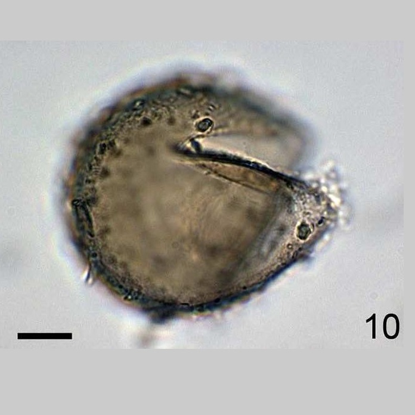 |
BrownSmooth |
Spherical |
Theropylic and hexagonal |
Diplopsalis ovata | 40 to 50 (D) |
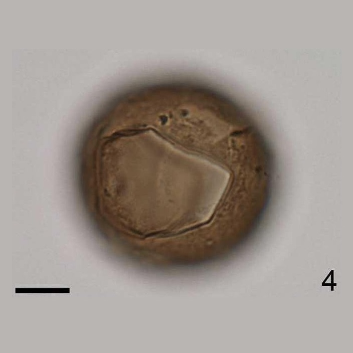 |
BrownSmooth |
Spherical |
Theropylic |
Huia caspica | 35 to 38 (D) |
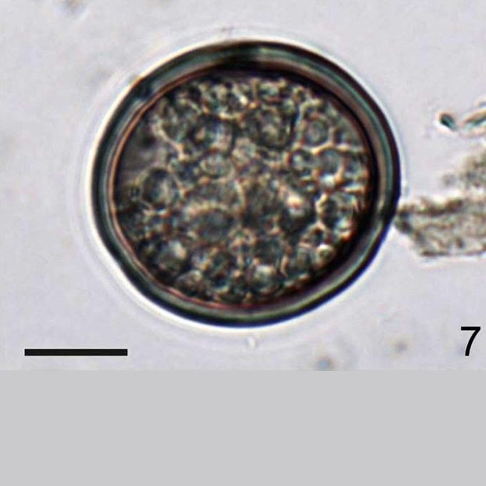 |
Pale brownAbundant granules |
Spherical |
Theropylic |
Lebouraia pusilla | 30 to 40 (D) |
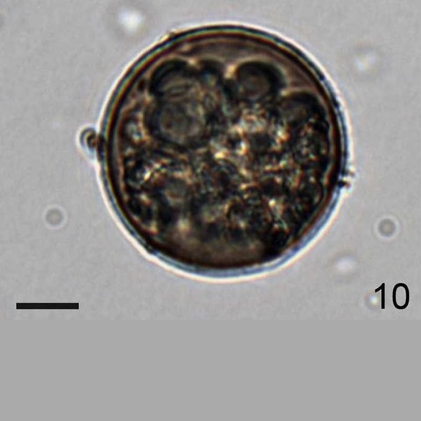 |